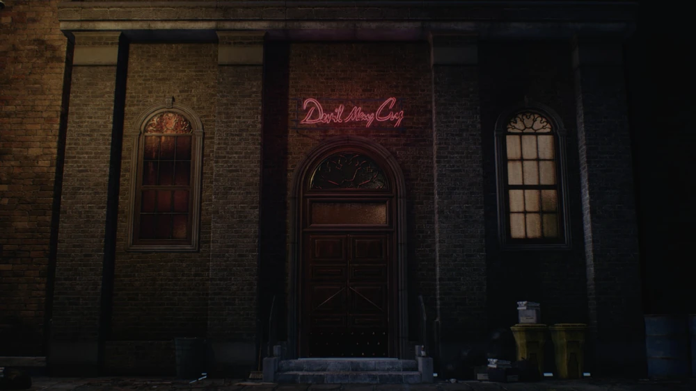
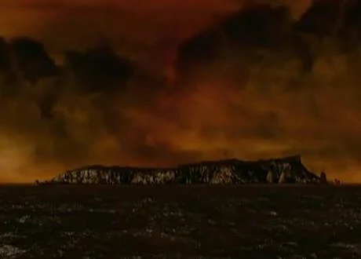
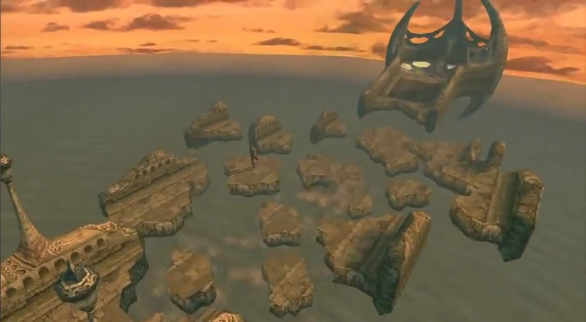
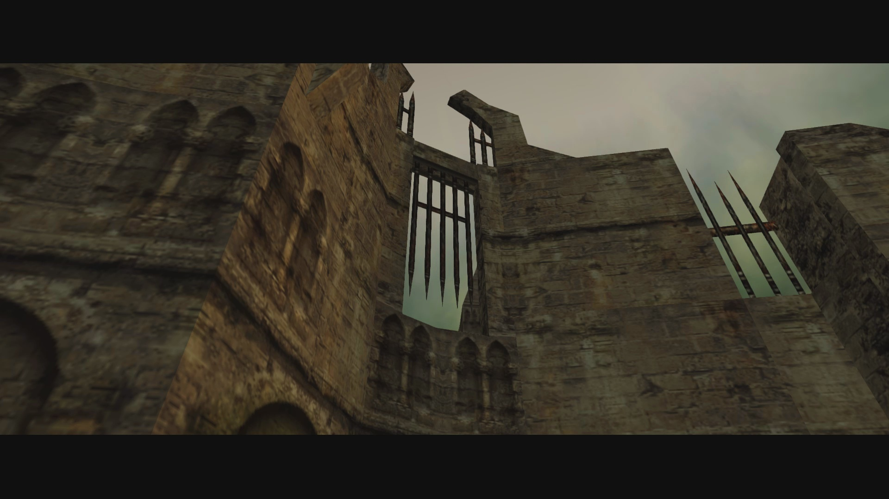
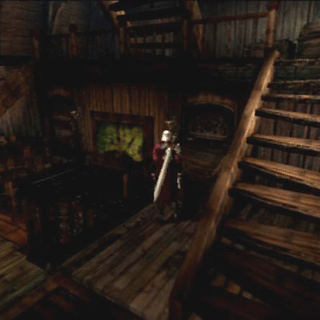
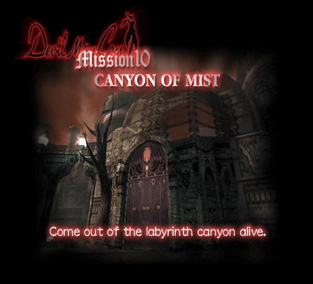
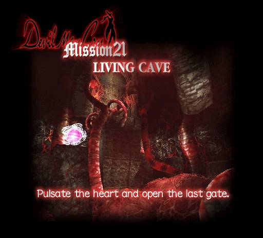
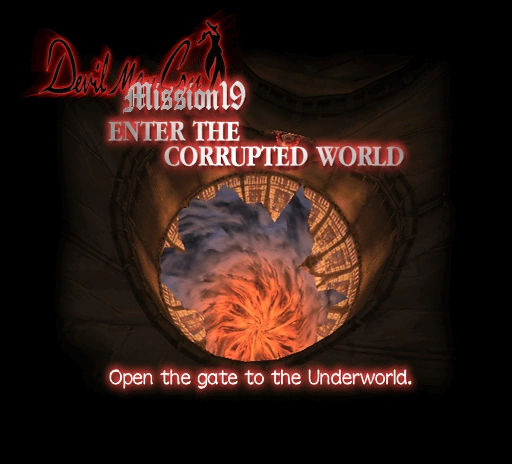
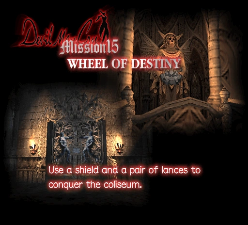
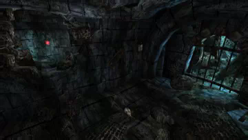

-

Магазин ДМС
Devil May Cry — это культовое агентство по расследованию паранормальных явлений, служащее базой и домом для охотника на демонов Данте. В этом магазине можно купить утилиты и усиления
-

Остров Маллет
Или Адские врата. место, куда отправляется Данте в Devil May Cry, чтобы предотвратить план Мундуса по открытию портала между Миром людей и Миром демонов.
-

Сломанный мост
Появляется в миссии 3, миссии 8 и 17 миссии. Впервые Данте попадает туда из Собора
-

Демонический замок
К моменту прибытия Данте замок заброшен и, судя по всему, находится в таком состоянии уже довольно долгое время.
-

Призрачный корабль
12 миссия игры Devil May Cry 1, ключевыми особенностями которой являются первая полноценная подводная секция и битва с боссом Грифоном.
-

Каньон тумана
Это миссия 10 в игре Devil May Cry 1. Главная задача в этом туманном лабиринте — победить врагов и найти правильный путь, следуя за загадочным светящимся шаром.
-

Живая пещера
21-я миссия в игре Devil May Cry 1, главной целью которой является активация пульсации гигантского сердца для открытия финальных врат.
-

Искаженный мир
Девятнадцатая миссия в игре Devil May Cry 1. Главная цель уровня — открыть врата в Подземный мир
-

Колесо судьбы
15-й миссии в игре Devil May Cry 1, а также одноименный квестовый предмет (сюжетный артефакт), необходимый для продвижения по сюжету.
-

Подземный мир
В первой части Devil May Cry представляет собой финальную сюжетную локацию, куда главный герой Данте отправляется в конце игры для победы над владыкой демонов Мундусом.